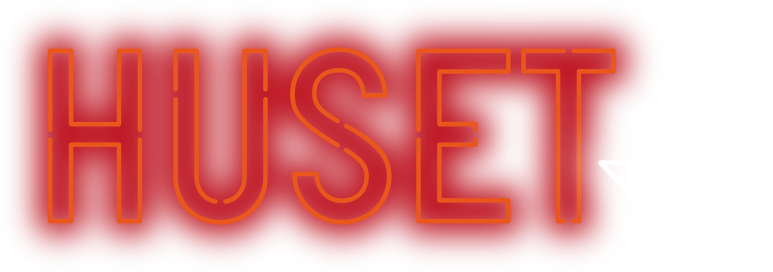

 <!--   Navigationsbaren når sitet er på tablet- eller mobilesite.-->
    <div class="burgermenu">
        
        <button class="burger">
            <div class="bar1"></div>
            <div class="bar2"></div>
            <div class="bar3"></div>
        </button>
    </div>

    <header>
        <!--Navigationsbaren på laptop-->
        <nav>
            <ul>
               
                <a href="events.html">
                    <li>EVENTS</li>
                </a>
                <a href="huset_tilbyder.html">
                    <li>HUSET TILBYDER
                    </li>
                </a>
                <a href="om.html">
                    <li>OM</li>
                </a>
                <a href="kontakt.html">
                    <li>KONTAKT</li>
                </a>
            </ul>
        </nav>
    </header>

   <style>
/*NAVIGATIONS BAR*/
header {
    display: grid;
    background-color: #B6C9D7;
    position: fixed;
    width: 100%;
}

.burgermenu {
    background-color: #B6C9D7;
    display: grid;
    grid-template-columns: 1fr 1fr;
}

.burger {
    cursor: pointer;
    background: #B6C9D7;
    border: none;
    justify-self: end;
    padding: 1em;
}

ul {
    list-style: none;
    margin: 0;
    padding: 0;
    display: grid;
    grid-template-rows: repeat(4, 1fr);
}

.nav_logo {
    width: 30px;
    display: none;

}

.nav_burger_logo {
    width: 60px;
}

       a {
           text-decoration: none;
           font-size: 1em;

       }

li {
    padding: 1em;
    cursor: pointer;
    text-align: center;
    font-family: Avenir;
    text-decoration: none;
    color: black;

}

.bar1,
.bar2,
.bar3 {
    width: 30px;
    height: 1px;
    background-color: black;
    margin: 6px 0;
    transition: 0.4s;
}

nav {
    max-height: 0px;
    overflow: hidden;
    transition: 0s;
    table-layout: red;
    color: blue;
}


nav.show {
    max-height: 500px;
}

.change .bar1 {
    transform: rotate(-45deg) translate(-2px, 6px);
}

.change .bar2 {
    opacity: 0;
}

.change .bar3 {
    transform: rotate(45deg) translate(-4px, -8px);
}

@media screen and (min-width:768px) {
    .burger {
        display: none;
    }

    nav {
        max-height: 200px;
        display: grid;
        grid-template-columns: repeat (6, 1fr);
    }


    .nav_logo {
        width: 80px;
        display: block;
        justify-self: center;
    }

    .burgermenu {
        display: none;
    }

    ul {
        display: grid;
        grid-template-columns: repeat(5, 1fr);
        grid-template-rows: 1fr;
    }
}

</style>


<script>

//Script til burgermenu
function onLoad() {

    function toggleMenu() {
        document.querySelector(".burger").classList.toggle("change");
        document.querySelector("nav").classList.toggle("show");
    }
    document.querySelector(".burger").addEventListener("click", toggleMenu);
    document.querySelector("ul").addEventListener("click", toggleMenu);

     }

//Vil først starte når DOM-indholdet er loaded
document.addEventListener("DOMContentLoaded", function (event) {
    onLoad();
});
</script>
